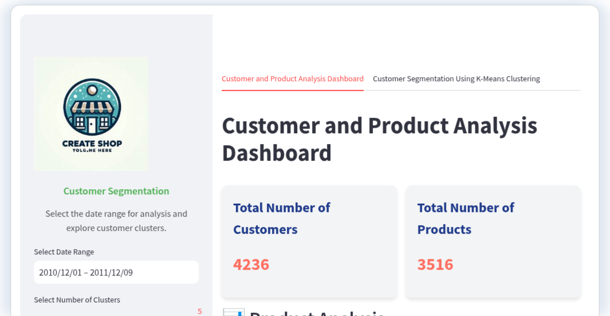
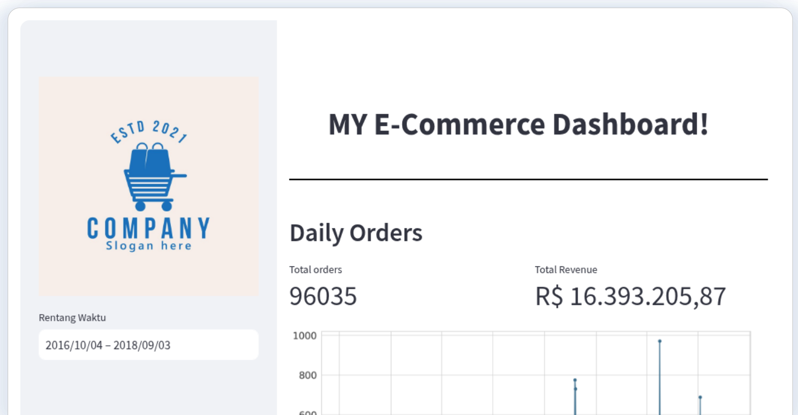
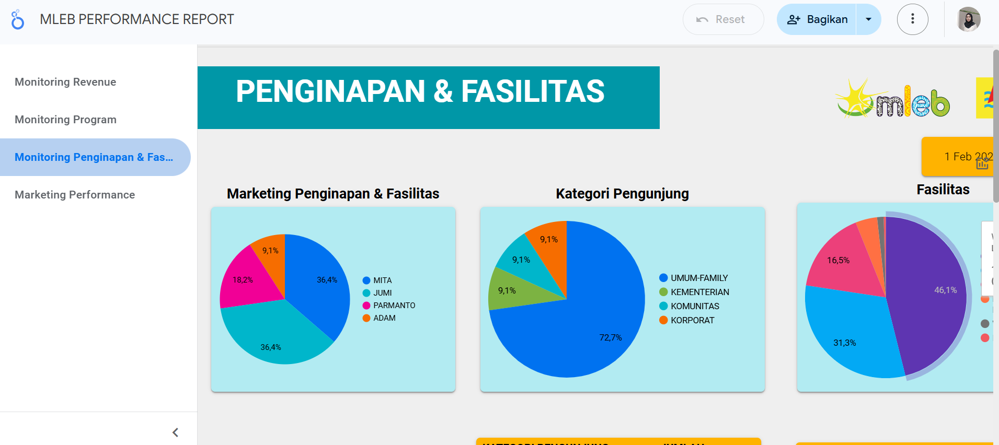
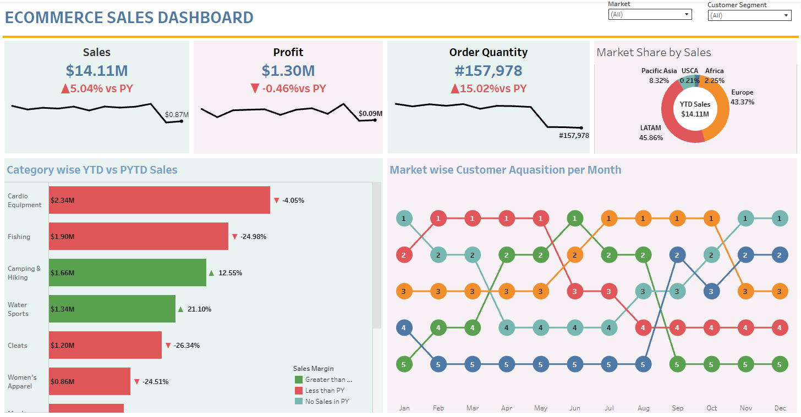
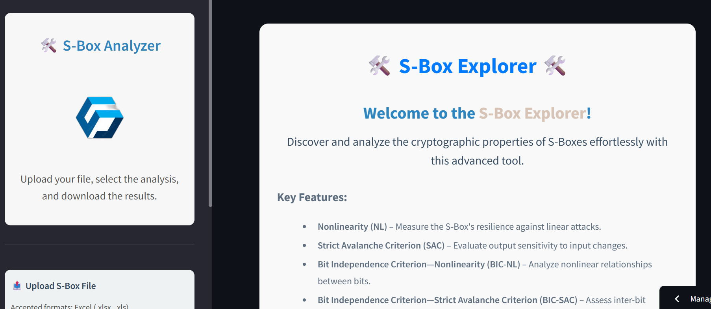
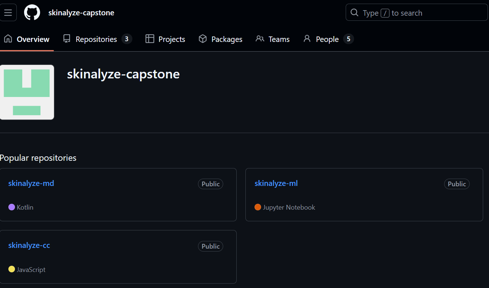
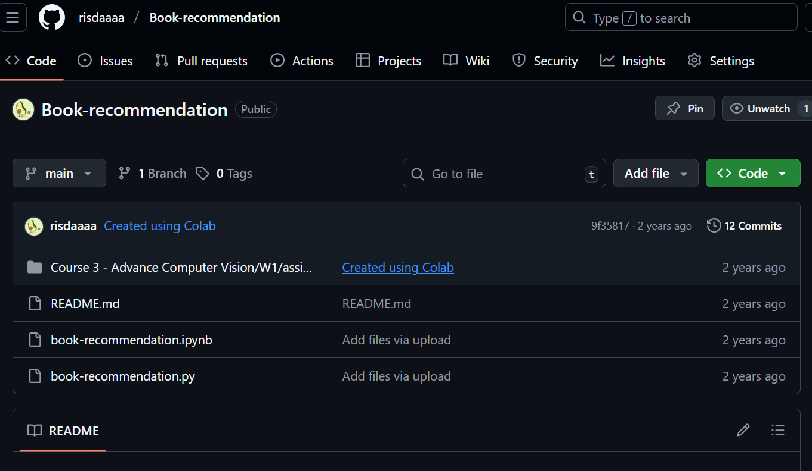

My Projects
A collection of projects showcasing my experience
in data analytics, business intelligence,
credit scoring, machine learning, and computer vision.
Each project reflects my interest in transforming
data into meaningful insights and practical solutions.

Credit Risk Insight – Credit Scoring
Data Analytics • Machine Learning
Developed an interactive credit scoring application
to support credit risk assessment through data-driven
analysis and machine learning. The application provides
insights to help evaluate borrower creditworthiness
and support more informed credit-related decisions.
Python
Machine Learning
Credit Scoring
Streamlit

Customer Segmentation for E-Commerce
Data Science
Developed a customer segmentation application
using clustering techniques to identify
customer groups and support targeted marketing
and customer retention strategies.
Python
Pandas
Scikit-learn
Streamlit
BISINDO Alphabet Recognition
Computer Vision • Deep Learning
Developed a two-stage Indonesian Sign Language
(BISINDO) alphabet recognition pipeline using
YOLOv11s for hand detection and Region of Interest
(ROI) extraction, followed by ResNet34 for
26-class hand gesture classification.
The research was published in Jurnal Informatika
Teknologi dan Sains (JINTEKS), SINTA 4.
YOLOv11s
ResNet34
PyTorch
OpenCV

Business Intelligence Dashboard
Business Intelligence
Developed an interactive dashboard using
Streamlit to visualize key performance
indicators, revenue trends, and operational
performance, supporting data-driven analysis
and decision-making.
Python
Streamlit
Pandas
Data Visualization

MLEB Performance Dashboard
Data Analytics
Developed an interactive performance monitoring
dashboard focusing on revenue, accommodation,
facility utilization, visitor categories,
and marketing performance to support
operational decision-making.
Looker Studio
Data Visualization
Business Intelligence
Dashboard Design

Pizza Sales Report
Business Intelligence • Power BI
Developed an end-to-end Power BI dashboard
to analyze pizza sales performance, including
revenue trends, busiest days and times,
category and size contributions, and
best- and worst-selling products.
Power BI
SQL
PostgreSQL
Data Modeling
DAX

Vrinda Store Sales Dashboard
Data Analysis • Excel Dashboard
Developed an interactive Excel dashboard
for retail sales analysis, featuring monthly
sales trends, order status, customer demographics,
sales channel performance, and top-performing
states using PivotTables, slicers, and charts.
Microsoft Excel
PivotTable
Dashboard
Data Visualization

E-Commerce Sales Dashboard
Business Intelligence • Tableau
Developed an interactive Tableau dashboard
to monitor e-commerce performance, including
sales, profit, order quantity, year-over-year
comparison, regional market share, category
performance, and monthly customer acquisition.
Tableau
Data Visualization
Business Intelligence
Dashboard Design

S-Box Explorer for Cryptography
Cryptography
Developed an interactive Streamlit application
to explore and analyze substitution boxes (S-Box)
used in cryptographic algorithms, focusing on
non-linearity and security properties.
Python
Streamlit
Cryptography
Data Visualization

Skinalyze – Skin Analysis App
Machine Learning • Capstone Project
Developed a machine learning-based skin
analysis application as a capstone project.
The system uses computer vision to analyze
facial skin images and classify skin conditions
to support personalized skincare recommendations.
Python
TensorFlow
Computer Vision

Book Recommendation System
Data Science • Machine Learning
Developed a book recommendation system
that suggests relevant books based on
similarity and user preferences.
The project focuses on data preprocessing,
feature extraction, and recommendation
logic to provide personalized suggestions.
Python
Pandas
Scikit-learn
Recommendation System